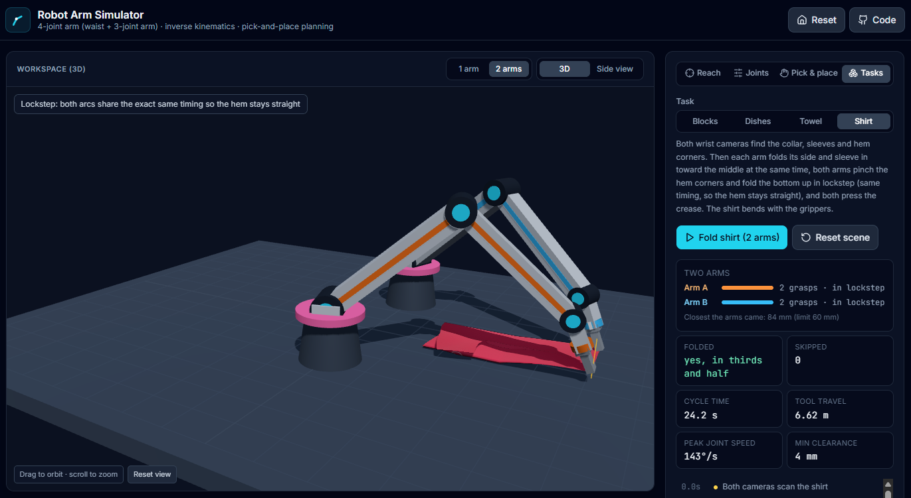

Nov 2026 · Robotics software
Robot Arm Simulator
A 3D simulator for a 5-joint arm that plans pick-and-place, loads a dishwasher, and folds laundry with one arm or two.
- Inverse kinematics solved three ways: analytic, Jacobian (damped least squares) and CCD.
- Pick-and-place like real robots run it: camera scan, close-up correction, slow final approach, grip-force sensing, and recovery from slips and drops.
- Two arms share the work with a frame-by-frame collision check: the dishwasher loads 1.7× faster, and the arms fold a T-shirt in lockstep.
- Python
- FastAPI
- NumPy
- React
- TypeScript
- three.js
- pytest · 68 tests